<!doctype html>
<meta charset="utf-8">
<title>Payd — demo cue cards</title>
<!--
  Full-screen title cards for the demo recording, so the montage is the
  recording: open this, press F for full screen, hit space between takes and
  record ONE continuous pass with the app in the other half of the screen.
  No editor, no cut list, no render.

  Keys:  space / -> next, <- back, F full screen, N shot notes (record with
  them OFF), digits 1-5 jump to a card.

  Card copy is `front/src/create.ts`'s own STEPS array, verbatim: the cards and
  the screen behind them have to say the same thing.
-->
<style>
  :root {
    --ink: #14130f; --cream: #eeebe3; --acid: #ccff00; --dim: #97917f; --rule: #2c2a24;
    --sans: ui-sans-serif, system-ui, -apple-system, "Helvetica Neue", Arial, sans-serif;
    --mono: ui-monospace, "SF Mono", Menlo, monospace;
  }
  html, body { height: 100%; }
  body { background: var(--ink); color: var(--cream); font-family: var(--sans);
         display: grid; place-items: center; overflow: hidden; cursor: none; }
  #stage { width: 100vw; height: 100vh; display: grid; place-items: center;
           animation: in .45s ease both; }
  @keyframes in { from { opacity: 0; transform: translateY(1.2vmin); } }
  .card { display: grid; gap: 2.2vmin; justify-items: start; padding: 0 9vw; max-width: 92vw; }
  .card.mid { justify-items: center; text-align: center; }
  .tag { font: 500 2.4vmin/1 var(--mono); letter-spacing: .34em; color: var(--acid); }
  .who { font: 2.4vmin/1 var(--mono); color: var(--dim); letter-spacing: .1em; }
  .top { display: flex; gap: 2.4vmin; align-items: baseline; }
  h1 { margin: 0; font-size: 9vmin; font-weight: 600; letter-spacing: -.02em; line-height: 1.05; }
  p  { margin: 0; font-size: 3.2vmin; color: var(--dim); max-width: 24em; line-height: 1.45; }
  code { font: 2.8vmin var(--mono); color: var(--cream); background: #1d1b16;
         border-radius: .8vmin; padding: .8vmin 1.6vmin; }
  .rule { width: 34vmin; height: 1px; background: var(--rule); }
  .eth { font: 2.6vmin var(--mono); color: var(--acid); }
  .wordmark { display: flex; align-items: baseline; gap: 1.6vmin; }
  .wordmark b { font-size: 11vmin; font-weight: 600; letter-spacing: -.02em; }
  .wordmark span { font: 500 3vmin var(--mono); letter-spacing: .5em; color: var(--acid); }
  img.mark { height: 30vmin; }
  #dots { position: fixed; bottom: 4vmin; left: 50%; transform: translateX(-50%);
          display: flex; gap: 1.4vmin; }
  #dots i { width: 1vmin; height: 1vmin; border-radius: 50%; background: var(--rule); }
  #dots i.on { background: var(--acid); }
  #notes { position: fixed; top: 0; right: 0; width: 34vw; height: 100%; overflow: auto;
           background: #0d0c0a; border-left: 1px solid var(--rule); padding: 3vmin;
           font: 1.9vmin/1.6 var(--mono); color: var(--dim); white-space: pre-wrap; cursor: auto; }
  #notes b { color: var(--acid); font-weight: 500; }
  [hidden] { display: none !important; }
</style>

<div id="stage"></div>
<div id="dots"></div>
<pre id="notes" hidden></pre>

<script type="module">
const CARDS = [
  { kind: "title",
    h: "From a launch to a paid holder,<br>in three transactions.",
    notes: `<b>SHOT 0 — cold open (8 s)</b>
Nothing to record here. Hold the card, talk over it.
Say: "A token launches on Pons. Its creator fee goes to a vault. The vault
buys real stocks and hands them to the holders. Three transactions."` },

  { kind: "step", tag: "01", who: "you", h: "Create the vault",
    p: "Nothing is launched. You become its LAUNCHER.",
    call: "Payd.createVault",
    notes: `<b>SHOT 1 — create the vault (45 s)</b>
Screen: the app on <b>#create</b>, wallet extension docked right.

<b>The basket — half road, half ballast:</b>
  TSLA  4000   tier 3000, Chainlink feed, $506 867   (the car)
  USO   3000   tier 3000, Chainlink feed, $75 983    (the fuel)
  SGOV  2000   tier 3000, Chainlink feed, $1 997 598 (the "real assets" line)
  GLD   1000   tier 3000, TWAP only,      $690 010   (no oracle, and it works)
Sums to 10 000. Tiers read on the live registry 2026-09-19, not copied from
the doc. UPS held this last slot and was dropped for its depth, $10 370 — thin
enough that a skipped leg and a zero row on camera were a real risk.

  1. Connect — show the network chip says Robinhood Chain.
  2. Build the basket above, then drag ONE weight so the viewer sees the bps
     sum re-balance.
  3. Rewards % and epoch: leave 30 min, point at it, say "every 30 minutes".
  4. Create → wallet popup. Pause on the popup: the function name on the
     card and the one in the wallet are the same string.
  5. Land on the vault address. Copy it — that copy is the cut to shot 2.` },

  { kind: "step", tag: "02", who: "you", h: "Launch on Pons",
    p: "Built here, so the three checked fields cannot be mistyped.",
    call: "PonsV2.launchToken",
    notes: `<b>SHOT 2 — launch on Pons (45 s)</b>
Screen: same page, step 2 panel — the launch is built HERE, not on Pons's site.

<b>The values, typed exactly as they stand:</b>
  Name         TollCoin
  Ticker       TOLL
  Creator tax  3          (percent, cap is 10)
  Logo         ipfs://bafkreic7g2otec46adxf6htyngyunxqpvzbgqotzomcvxruadw5quhrgam
  Description  Launched on Pons. Fee plugin by Payd Protocol.
  X            https://x.com/PaydRH
  Site / TG    leave empty
  First buy    0          (raise it only if you want the launchAndBuy card)

The logo is brand/logo-512.png (66 418 B, one block), pinned on Filebase
2026-09-19 and served by filebase / pinata / ipfs.io, bytes checked against the
local file. Re-check it the morning of the take: one provider only, and on a
real launch a dead logo is dead forever — there is no setter.
  curl -s https://ipfs.io/ipfs/<CID> | shasum -a 256   -> 5f369d320b9e00ee…

  1. Name / symbol / supply, typed live (short symbol, it is read aloud).
  2. Show the creator-fee recipient field ALREADY filled with the vault from
     shot 1 — that is the whole point of the step, linger on it.
  3. Launch → wallet popup → tx. Show the token address appear.
  4. Optional flex: a first buy in the same transaction (the card's copy
     changes to launchAndBuy when the buy field is non-zero — advance the
     card only if you actually do it).` },

  { kind: "step", tag: "03", who: "anyone", h: "Point the fees at it",
    p: "Open to all: the destination is written in the launch, not in the caller.",
    call: "FeeVault.bind",
    notes: `<b>SHOT 3 — bind (30 s)</b>
Screen: step 3 panel.
  1. Say the line while it is on screen: no owner, no key — anyone can call
     bind, because the destination was written into the launch.
  2. Bind → wallet → confirmed.
  3. Cut to the vault view: token bound, epoch counter running, basket listed.
  4. End on the holder side for two seconds — the claim button — so the last
     frame is the payout, not a form.` },

  { kind: "outro", h: "Fees in. Real assets out.<br>Every 30 minutes.",
    notes: `<b>SHOT 4 — card out (5 s)</b>
Hold, then stop the recording. Do not talk over the last two seconds.` },
];

const stage = document.getElementById("stage");
const dots = document.getElementById("dots");
const notes = document.getElementById("notes");
let i = 0;

const body = (c) => c.kind === "step" ? `
  <div class="card">
    <div class="top"><span class="tag">${c.tag}</span><span class="who">${c.who}</span></div>
    <h1>${c.h}</h1>
    <p>${c.p}</p>
    <div class="rule"></div>
    <code>${c.call}</code>
  </div>` : c.kind === "title" ? `
  <div class="card mid">
    
    <div class="wordmark"><b>Payd</b><span>PROTOCOL</span></div>
    <h1 style="font-size:5.4vmin;font-weight:400">${c.h}</h1>
    <div class="eth">paydprotocol.eth<span style="color:var(--dim)"> · @PaydRH</span></div>
  </div>` : `
  <div class="card mid">
    <h1>${c.h}</h1>
    <div class="rule"></div>
    <div class="eth">paydprotocol.eth<span style="color:var(--dim)"> · @PaydRH</span></div>
  </div>`;

function show(n) {
  i = Math.max(0, Math.min(CARDS.length - 1, n));
  stage.innerHTML = body(CARDS[i]);
  stage.style.animation = "none"; void stage.offsetWidth; stage.style.animation = "";
  dots.innerHTML = CARDS.map((_, k) => `<i class="${k === i ? "on" : ""}"></i>`).join("");
  notes.innerHTML = CARDS[i].notes;
}

addEventListener("keydown", (e) => {
  if (e.key === " " || e.key === "ArrowRight" || e.key === "PageDown") { show(i + 1); e.preventDefault(); }
  else if (e.key === "ArrowLeft" || e.key === "PageUp") show(i - 1);
  else if (e.key.toLowerCase() === "n") { notes.hidden = !notes.hidden; dots.hidden = !notes.hidden; }
  else if (e.key.toLowerCase() === "f") document.documentElement.requestFullscreen?.();
  else if (/^[1-9]$/.test(e.key)) show(Number(e.key) - 1);
});
addEventListener("click", () => show(i + 1));
show(0);
</script>
